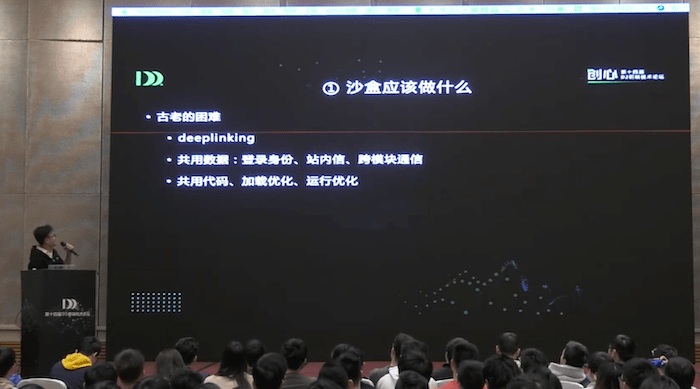
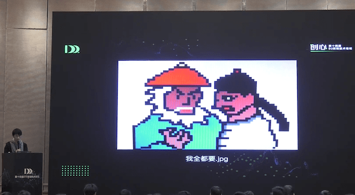
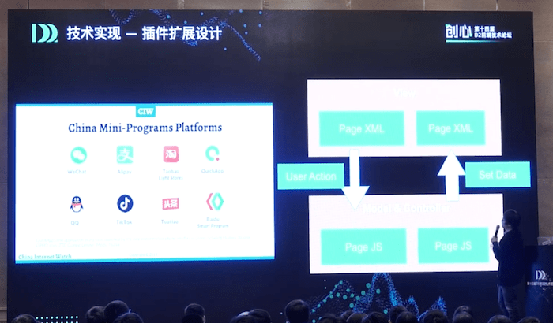
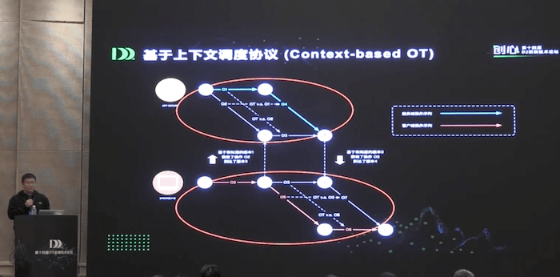
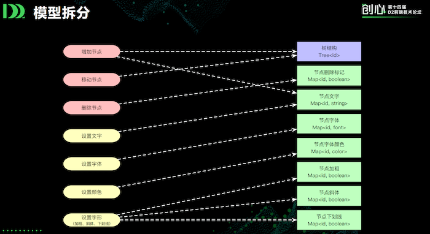

参加 14 届 D2 是什么体验？

于上月初参与了阿里在杭州举办的第 14 届 D2 创心，这次的专场基本是微前端+ServerLess，当时听完只是对 微前端的实践手段有所感悟，没有形成系统的总结。恰好最近看到阿里云栖社区将 D2 大部分议题资料上传，趁着春节假期，将关心的话题重温了一遍，挑选一些有用的信息点分享给大家。
微前端部分
巨石应用的危害
假设你刚刚入职，leader 对你的要求是维护一个开发了 3 年的巨型 B 端项目。看到项目工程目录的那一刻你就大呼不妙，这个项目通过几代已经离职同学的不懈努力，已经变成了一座蔚为壮观的屎山：
公共组件里光 ajax 的封装就有三种形式，Components 里将近 100 个不明所以的业务组件；实际业务代码更是惨不忍睹，一个文件两千行代码没有注释，各种回调反复横跳，看得人眼花缭乱。你的 leader 告诉你说，我们的项目是个大中台项目，有一部分代码是其他业务线的同学贡献，甚至还有后端同学。你看着后端同学生生写出的两千行 JS，一时不知是该鄙视还是该敬佩。
不过这一切都难不到你，你最擅长的操作就是屎上雕花，而且第一个需求不过是个无关紧要的小需求。当需求做完时你还是崩溃了，你惊讶的发现项目一次打包需要 10 分钟，每次发布都让你痛不欲生。上线的当晚由于发布回滚，你的王者农药都输了 3 局才成功发布。
但倒霉的事情仍未结束，第二天一大早，你的 leader 突然通知你昨天的改动不小心影响了一个全局公共组件，被迫再次回滚，希望你能好好准备一下故障 review。
尽管努力克制心里的一万遍 MMP，但在故障 review 上还是没能保持体面。你吐槽了一下项目代码一坨屎的现状，希望大佬们有计划地展开重构。你的 leader 面露难色，但还是做了个宽慰的手势，表示下次一定。
上面这个故事其实描述了巨石（Frontend Monolith）应用面临的实际业务难题：
- 技术债务：技术栈陈旧不堪、债务积累过多，其腐化速度边际递增、越来越快；
- 打包缓慢：这一点搞过的同学应该都深有体会。到了项目后期，怎么优化都不如进行项目拆分；
- 耦合性高：巨石项目后期一定会有多团队同学介入开发，如果不进行应用隔离可能会导致每次改动对全局造成影响。
微前端
而微前端就是专为解决巨石应用带来的问题而生。它的核心思想就是按照业务维度划分独立的子应用，然后由主应用做统一的子应用加载、移除等生命周期管理。由于无法控制每个微应用的开发者，且考虑到前端技术迭代的速度很快，因此微应用最好可以实现能够将不同技术栈的应用组合成一个大型应用，也就是技术无关
通过子应用隔离的方式，可以比较完美地解决上面描述的问题：
- 技术债务：由于子应用技术无关，因此可以在新应用随意启用新的技术栈进行开发；
- 打包缓慢：子应用只需要发布上线自己的部分，子应用的改动不会导致其他应用和主应用重新发布上线；
- 耦合性高：由于两个应用完全无关，只跟主应用有单向的通信，因此耦合性大大降低。
听到这里你可能会觉得，这听起来就是一堆子项目集成到一个大项目里啊，这题我会，直接 iframe 呗。这一点竞对艾石光老哥讲的沙盒体系中做了一个很好的比喻：他把微前端比作 Docker，iframe 比作虚拟机。这两种方案各有优劣，但微前端能够弥补 iframe 一些无法绕开的坑点，例如：DeepLinking、身份验证、加载资源优化与一些兼容问题。

除去沙盒体系，微前端技术层面的其他技术难点可以参考有知的微前端蚂蚁落地实践。有知详细介绍了微应用技术层面上的几个坑点：如何实现技术无关，如何处理路由和应用载入，如何做沙盒机制以及如何处理应用间通信。

几个印象比较深刻的点有：
- 实现技术无关要求子应用按照规范自行暴露一些生命周期；
- 通过 HTML Entry 来载入子应用；
- 通过动态卸载样式表实现样式隔离；
- 通过实时分析依赖（semver in runtime）来解决子应用依赖重复的问题。
而第一场克军大佬微前端架构体系，则是从宏观层面思考微前端，总结下来其实就一句话：微前端不是框架/工具，而是架构体系。在细节逐步完善的过程中就提出微前端的架（hua）构（da）体（bing）系，是大佬的风格。
克军给出了许多教科书式的定义，例如什么工程价值业务价值和十大问题，这里我们不是上课就不一一列举。这里更值得关注的是克军在架构微前端时的思路，主要是两个方面：
- 注重云时代的开发展望：克军认为微前端+ServerLess 构建成的微应用是未来云时代开发的基石，这一点算是一个大局观；
- 注重微前端的运维能力：作为一个架构体系，需要提供一套便于操作的运维能力，包括配置系统和观察工具。翻译成大白话就是不关要提供 SDK，还要提供平台。
个人理解，克军的这一场分享对于成熟微前端团队来说没必要深究，因为目前还在技术攻坚阶段；但是当技术工具完成之后，需要回过头来探究思考一下架构体系，这一场分享可能会充当一个指明灯的作用。
垂直领域
由于目前的业务中没有涉及到云服务相关，因此对下半场 ServerLess 的部分听得走马观花。不过除去微前端和 ServerLess 之外，在一些 2B 的垂直领域也有一些不错的分享，比如 IDE 和协同编辑。
IDE
IDE 部分听到一个有意思的点是，在设计 IDE 插件时，出于隔离考虑，需要确保插件代码不能运行在主进程中；但采用 worker 的机制时 JS 代码无法访问 DOM。支付宝小程序 IDE 团队从小程序的设计中获得灵感（禁止套娃），采用视图进程、逻辑进程分离进程的模型，从视图到逻辑提供简陋的注入组件功能，反过来只能通过 setData 来修改。

协同编辑
沙洲在协同编辑原理与实践中简要讲明了协同编辑的基础实现原理，其中核心思想有二：
- 操作变换（Operation Transformation）算法：类似于 Git Merge 功能，当两个用户的操作相互冲突时根据其中一个用户操作后的结果对另一个用户的操作进行变换，是两者操作后得到的结果一致；
- 协同调度协议：指客户端与服务端通信的基本格式，主要包含版本和操作，即每次通信都在告知“我在版本上 x 进行了操作 o1、o2、o3 到达版本 y”
目前最好的方式是采用 COT，即不打回操作，服务端每次接受到操作时都进行操作变换，告知客户端最新的变换结果。

但这样带来的问题是时间复杂度的增加，目前 Google Docs 采用的办法是在端侧使用类似 Git Diff 的语法压缩操作，将用户多次操作产生的结果尽量合并；钉钉文档还使用冲突域拆分的方式，将文档拆分为多个域，每个域内部的 OT 算法可以复用。例如一个脑图的操作，可以抽象为两种：
- 树解构操作：增加节点、移动节点，这里对应四种 OT：客户端增加/移动、服务端增加/移动 2*2；
- 映射表操作：删除节点（虚拟删除）、设置文字、字体、颜色、字形，这里只对应一种 OT：客户端设置 vs 服务端设置；

抽象之后就只有五个 OT 操作，整个复杂度大大降低。
开场宣讲
最后我们再来看一下圆心开场的宣讲，开场是最早听到，印象也最为深刻。个人认为圆心的宣讲是大公司内部未来前端发展方向的展望，对个人的发展规划也能起到一定的指导作用，所以放在最后总结一下。
从 PC 到端
与过去受制于浏览器的发展不同，现在前端的触角延伸到对端测渲染能力的重塑，由此衍生出的技术有 RN、Flutter、小程序等。
个人认为这里对前端端侧技术的掌握提出了一定的要求，如果传统的 Web 前端不能掌握一定的 Native 解决方案，势必在此技术侧难以深入，最典型的场景就是使用这些技术在渲染上遇到性能瓶颈时。
从 2C 到 2B
这两年从 2C 到 2B 是个整体趋势，这里的主要原因是各个公司开始重视中台建设，大量中后台业务成为前端主战场。圆心认为这里有三个方向的突破点：
微前端
微前端主要目的有二，被动一点的目的是解决当前巨石应用带来的困境（打包发布解耦、技术栈更新等），主动一些的目的是给复杂团队协同运作提供解决方案，给大型应用提供标准架构、设计的解决方案。
垂直领域
有一些针对 B 端场景的可以深入挖掘的垂直领域，例如 IDE、数据可视化、在线 Excel 等；
IDE 是阿里号称未来四大方向之一，个人感觉是因为当前技术有场景、未来业务可展望。翻译成人话就是在现有技术难题下，IDE 是一个绕不开的坎，例如 Serverless 的在线代码编辑、小程序的 IDE 工具等，因此有业务动力去攻克难题；而展望一下未来，在发布构件流程云化、模块解耦微前端化之后，写代码实际上是一个即开即用的场景，在线 IDE 是一个可见未来的必需品，也有投入精力的必要。
数据可视化这一点也有一定的感触。最近在使用 AntV，AntV 实际上就是一场对数据可视化领域的范式重塑，之前玉伯在我的前端成长之路中也说过：
2014 年开始做 AntV 数据可视化的时候，我当时跟萧庆两个人就是被《The Grammar of Graphics》这本书感染了，是一本英文电子书。看完之后我发现这个东西如果真的实现的话，会让整个数据图表发生很多改变，可以成为 AI 时代的数据图形表达语法，能完全改变掉 ECharts 等传统图表类库的使用方式。
也是深（da）挖（li）出奇迹的典型代表。
领域模型
当许多前置的难题被攻克之后，前端就会面临如何与后端领域模型结合的问题。这一点我的理解还不够成熟系统，但是之前有听后端架构师讲 DDD（Domain-Driven Design，领域驱动架构）。个人理解，DDD 领域建模就是现实世界的心智模型在代码层面的数字模型映射。
当前端远离业务的时候，确实不需要考虑代码层面如何进行领域建模；但当前一大发展趋势就是把脱离业务的部分尽量抽象统一，让开发更加贴近业务，思考针对业务的建模。到了这一步实际上对前端开发者提出了更高层级的要求。
从传统模式到云加端
这里讲的是经由 ServerLess 技术，前端工作的重心逐渐由切图一把梭转向业务开发本身，这里与上述的领域模型的挑战类似；
智能化、语言底层
前端智能化，这点需要算法同学的鼎力相助，也需要前端从疯狂切图转型到对业务进行架构、抽象；语言底层指 TypeScript 以及 WebAssembly 等方向，探究较少，本次也不详述。
TLDR
其实每次 D2 的主要作用就是寻找灵感，打打鸡血。本次参会最主要的收获还是微前端体系在业内已经有成熟解决方案，这个事情又离业务非常近（哪里还没个巨石应用呢），只要动手就有收获；其次就是圆心对发展方向的展望，现状已然变成不会写 Node 的 Native 不是好前端了😂，2020 还需要更加努力啊！